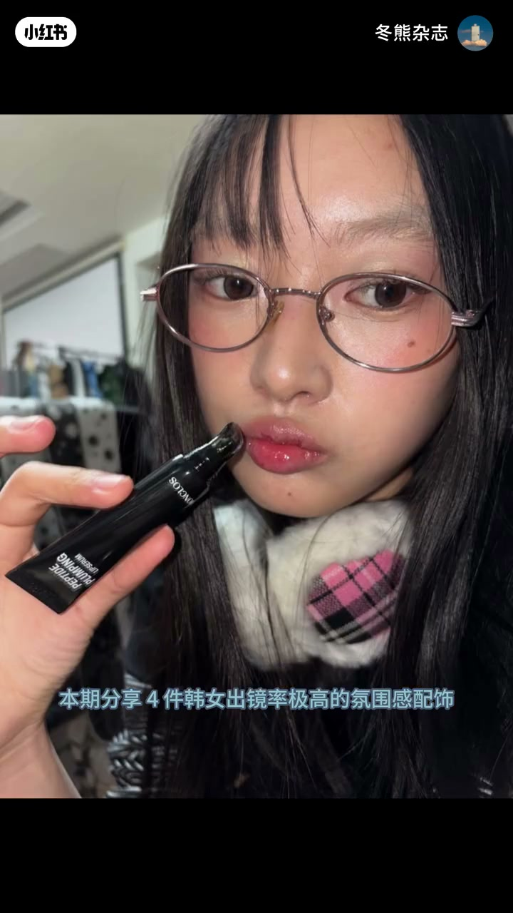
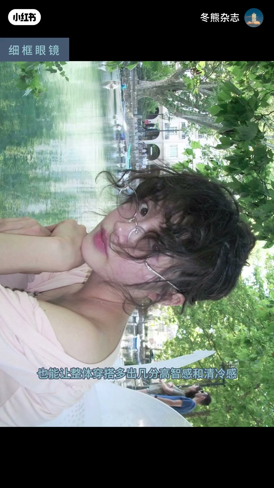
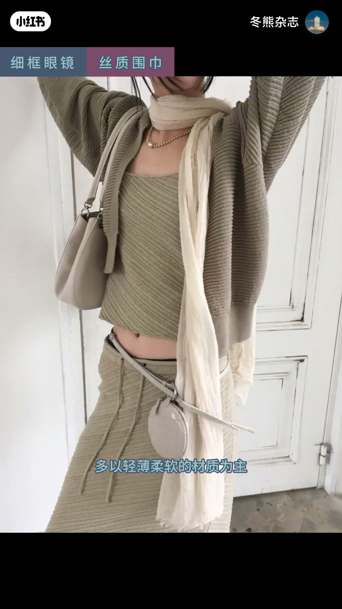
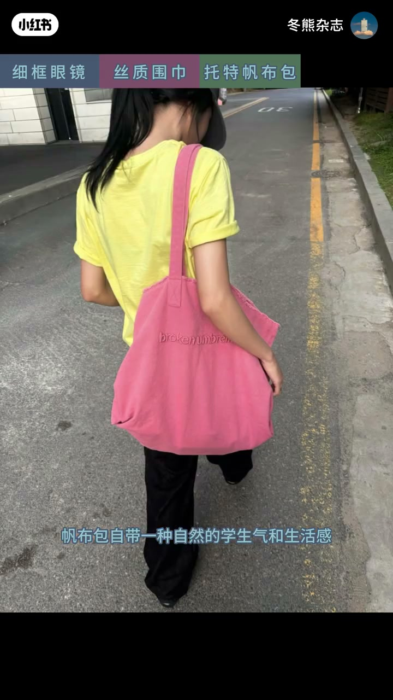
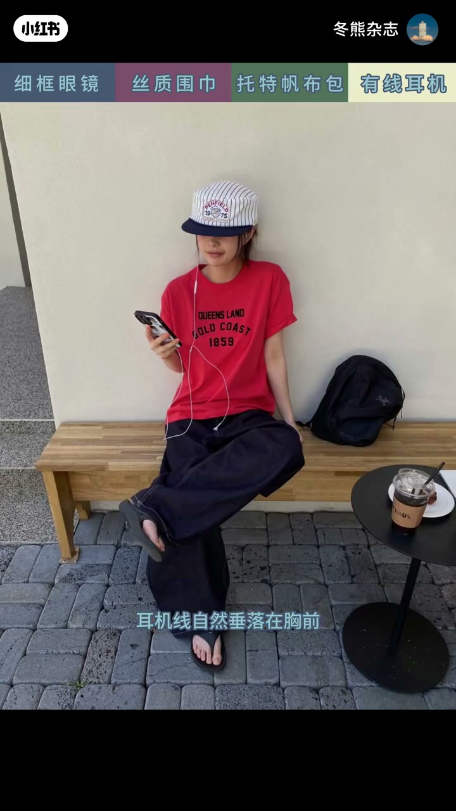

内容要点
干净、舒适、生活感、故事感——韩女穿的未必是最特别的衣服，却总能用细节让整体多出几分别样氛围。冬熊杂志本期只分享四件出镜率极高的氛围感配饰：细框眼镜、丝织围巾、托特帆布包、有线耳机。不挑身材、搭配难度不高，普通女生也能轻松复刻。
知识结构
氛围来自细节而非最特别的衣服；四件配饰不挑身材、难度低。
金属框干净克制、理性时髦，抬高质与清冷感；棕色/玳瑁复古框更温柔文艺，适合书卷气。
小丝巾是基础款变精致的关键；飘逸轻薄款随动灵动俏皮；长条窄围巾作点睛叠穿，补色与层次。
自带学生气与生活感，像图书馆或咖啡店日常；比正式包或机能包更轻松有生活方式感。
无线普及后有线耳机成氛围符号：线垂胸前增加随意与故事感。四件分别对应高质、精致、松弛、生活感。
韩女氛围感常藏在易被忽略的配饰里：细框眼镜定高质清冷，丝巾做精致点睛，帆布托特给松弛生活感，有线耳机补故事感。先改细节，比狂换整套衣服更划算。
00:00-00:18氛围感藏在细节：四件低门槛配饰
开场用四个词定调：干净、舒适、生活感、故事感。她们穿的未必最特别，但总能通过细节让整体多出几分别样氛围。
冬熊本期分享四件韩女出镜率极高的氛围感配饰：不挑身材，不需要很高的搭配难度，普通女生也可以轻松复刻。

00:18-00:37第一件：细框眼镜
细框眼镜几乎是韩女塑造氛围感的必备。金属镜框自带干净克制气质，理性又时髦，也能让整体多出几分高质感与清冷感。
棕色、玳瑁等复古镜框则多一分温柔和文艺气息，非常适合打造书卷气。

00:37-01:01第二件：丝织围巾
小小一条丝巾，往往是让基础款变得精致的关键。最近很火的飘逸感丝巾多以轻薄柔软材质为主，佩戴时随动作自然摆动，为整体增添灵动与俏皮。
出镜率同样高的长条窄围巾，更像点睛式叠穿：既能丰富色彩，也能让穿搭层次更完整。

01:01-01:16第三件：托特帆布包
帆布包自带自然的学生气和生活感——像刚从图书馆出来，也像准备去咖啡店待上一整个下午。
相比过于正式或过于机能的包款，它更轻松、更有日常氛围，简单随性，充满生活方式感。

01:16-01:56第四件：有线耳机，以及四件气质对照
无线耳机普及之后，有线耳机反而重新成为一种独特的氛围符号。耳机线自然垂落在胸前，会让照片多出几分随意和故事感，像在通勤、散步、听歌或发呆，安静又带一点文艺。
四件分别对应韩女穿搭里重要的几种气质：细框眼镜的高质感、丝织围巾的精致感、帆布托特的松弛感、有线耳机的生活感。真正的氛围往往就藏在这些易被忽略的细节里。片尾预告下期解读欧阳娜娜的春夏 BM 穿搭。

完整转录（55段）
以下文本由 Whisper medium 模型自动转录，可能存在少量识别误差，已尽可能修正。
干净、舒适、生活感、故事感
他们穿的未必是最特别的衣服
但总能通过一些细节
让整体多出几分别样的氛围
大家好,我是小熊
本期分享四件
韩女出镜率极高的氛围感配饰
不挑身材,不需要很高的搭配难度
普通女生也可以轻松复刻
第一个是细框眼镜
细框眼镜几乎是韩女塑造氛围感的必备配饰
金属镜框自带干净克制的气质
理性又时髦
也能让整体穿搭多出几分高质感和轻冷感
棕色、带帽等复古镜框
则多了一分温柔和文艺气息
非常适合打造书券气和文艺感
第二个是丝织围巾
小小一条丝巾
往往是让基础款变得精致的关键
最近很火的飘逸感丝巾
多以轻薄柔软的材质为主
配戴时会随著动作自然摆动
为整体增添几分灵动与俏皮
而出镜率同样很高的长条窄围巾
则更像穿搭中的一层点睛式叠穿
既能丰富色彩
也能让整体的穿搭层次更加完整
第三个是托特帆布包
帆布包自带一种自然的学生气和生活感
像刚从图书馆出来
也像准备去咖啡店待上一整个下午
相比过于正式或过于机能的包款
它更轻松也更有日常氛围
简单随性充满生活方式感
第四个是有线耳机
在无线耳机普及之后
有线耳机反而重新成为一种独特的氛围符号
耳机线自然垂落在胸前
会让照片多出几分随意和故事感
像在通勤 散步 听歌或发呆
安静又带著一点文艺气质
这四件单品
分别对应了韩女穿搭中最重要的几种气质
细框眼睛的高质感
丝织围巾的精致感
帆布托特包的松弛感
以及有线耳机的生活感
真正的氛围
往往就藏在这些容易被忽略的细节里
那本期就先到这里
下期准备给大家解读一下
欧阳娜娜的春夏BM穿搭
感兴趣拜托持续关注
我们下期节目很快再见